动态存储分配使得编写返回指向新字符串的指针成为可能.
编写一个函数, 连接两个字符串而不更改任何一个字符串.
该函数先计算要拼接的两个字符串的长度, 然后调用malloc为结果分配适量的空间.
/*
* two macros defined in <stdlib.h>
* #define EXIT_SUCCESS 0
* #define EXIT_FAILURE 1
*/
char *concat(const char *s1, const char *s2)
{
char *result;
result = malloc(strlen(s1) + strlen(s2) + 1);
if (result == NULL) {
printf("Error: malloc failed in concat\n");
exit(EXIT_FAILURE); // 等价于 exit(1);
}
strcpy(result, s1);
strcat(result, s2);
return result;
}调用concat函数:
char * p = concat("abc", "def");指针p将指向字符串"abcdef", 该字符串存储在动态分配的数组中.
必须小心使用动态分配存储的concat等函数.
当不再需要concat返回的字符串时, 需要调用free函数来释放字符串占用的空间.
否则, 程序最终可能会耗尽内存.
*remind2.c*程序基于第13章的*remind.c*程序, 该程序打印一个月的每日提醒链表.
最初的*remind.c*程序将提醒字符串存储在一个二维字符数组中.
在新程序中, 存储在元素是指向动态分配字符串指针的一维数组.
换成动态分配的字符串的优点:
空间利用更高效: 可为要存储的提醒分配确切字符数量的空间.
无需移动字符串: 不需要为了给新提醒腾出空间而调用strcpy来移动现有字符串.
从二维数组切换到指针数组只需要更改程序的八行.
/* Prints a one-month reminder list (dynamic string version) */
#include <stdio.h>
#include <stdlib.h> /* 1 */
#include <string.h>
#define MAX_REMIND 50 /* maximum number of reminders */
#define MSG_LEN 60 /* max length of reminder message */
int read_line(char str[], int n);
int main(void)
{
char *reminders[MAX_REMIND]; /* 2 */
char day_str[3], msg_str[MSG_LEN+1];
int day, i, j, num_remind = 0;
for (;;) {
if (num_remind == MAX_REMIND) {
printf("-- No space left --\n");
break;
}
printf("Enter day and reminder: ");
scanf("%2d", &day);
if (day == 0)
break;
sprintf(day_str, "%2d", day);
read_line(msg_str, MSG_LEN);
for (i = 0; i < num_remind; i++)
if (strcmp(day_str, reminders[i]) < 0)
break;
for (j = num_remind; j > i; j--)
reminders[j] = reminders[j-1]; /* 3 */
reminders[i] = malloc(2 + strlen(msg_str) + 1); /* 4 */
if (reminders[i] == NULL) { /* 5 */
printf("-- No space left --\n"); /* 6 */
break; /* 7 */
} /* 8 */
strcpy(reminders[i], day_str);
strcat(reminders[i], msg_str);
num_remind++;
}
printf("\nDay Reminder\n");
for (i = 0; i < num_remind; i++)
printf(" %s\n", reminders[i]);
return 0;
}
int read_line(char str[], int n)
{
int ch, i = 0;
while ((ch = getchar()) != '\n')
if (i < n)
str[i++] = ch;
str[i] = '\0';
return i;
}动态分配的数组与动态分配的字符串具有相同的优点, 动态分配的数组和普通数组一样易于使用.
可以使用malloc为数组分配空间, 也可以使用calloc函数, 后者会初始化它分配的内存.
realloc函数允许我们根据需要使数组扩展或缩减.
##### 使用malloc为数组分配存储空间
假设需要一个包含n个整数的数组, n是在程序运行期间计算的.
先声明一个指针变量, 依据n, 调用malloc为数组分配空间:
int *a;
a = malloc(n * sizeof(int));
// int *a = (int *) malloc(n * sizeof(int));始终使用sizeof运算符来计算每个元素所需的空间量.
一旦a指向动态分配的内存块, 就可以将指针a用作数组名称.
例如, 可以使用以下循环来初始化a指向的数组:
for (i = 0; i < n; i++)
a[i] = 0;还可以选择使用指针算术运算代替取下标来访问数组的元素.
calloc函数是malloc的替代方法.
calloc的原型:
void *calloc(size_t nmemb, size_t size);
calloc的规则:
为nmemb个元素的数组分配空间, 每个元素的长度都是size个字节.
如果请求的空间不可用, 则返回空指针.
通过将所有位设置为0来初始化分配的内存.
为n个整数的数组分配空间的calloc调用:
a = calloc(n, sizeof(int));
以1作为第一个参数调用calloc, 可为任何类型数据项分配空间:
struct point { int x, y; } *p;
p = calloc(1, sizeof(struct point));realloc函数可以调整动态分配的数组的大小.
realloc的原型:
void *realloc(void *ptr, size_t size);
ptr必须指向通过先前调用malloc、calloc或realloc获得的内存块.
size表示块的新大小, 可能大于或小于原始大小.
realloc的规则:
当扩展内存块时, realloc不会初始化添加到块中的字节.
如果realloc不能按要求扩大内存块, 则返回空指针; 旧内存块中的数据不变.
如果realloc被调用时以空指针作为其第一个参数, 它的行为类似于malloc.
如果realloc被调用时以0作为第二个参数, 它会释放内存块.
我们期望realloc相当有效:
当被要求减小内存块的大小时, realloc应该"在原先的内存块上"直接缩减.
同理, 扩大内存块时realloc也不应该移动它.
如果不能扩大一个块, realloc会在别处分配一个新块, 然后将旧块的内容复制到新块中.
一旦realloc返回, 一定要更新所有指向内存块的指针, 以防内存块被移动.
malloc和其他内存分配函数从称为堆的存储池中获取内存块.
过于频繁地调用这些函数(或者向它们请求大块内存)会耗尽堆, 导致函数返回空指针.
更糟糕的是, 程序可能会分配内存块然后失去对它们的跟踪, 从而浪费空间.
##### 释放存储空间
例子:
p = malloc(…);
q = malloc(…);
p = q;前两条语句执行后:
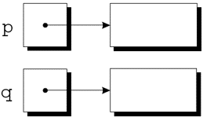
将q分配给p后, 两个变量现在都指向第二个内存块:
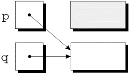
没有指向第一个块的指针, 因此再也不能使用它了.
程序不可再访问到的内存块被称为垃圾.
留有垃圾的程序存在内存泄漏.
一些语言提供了自动定位和回收垃圾的垃圾收集器, 但 C 没有.
需要用free函数释放不需要的内存来回收自己的垃圾.
free原型:
void free(void *ptr);
向free传递一个指向不需要的内存块的指针:
p = malloc(…);
q = malloc(…);
free(p);
p = q;调用free会释放p指向的内存块.
使用free会导致一个新问题: 悬空指针.
free(p)释放p指向的内存块, 但不改变p本身.
如果我们忘记了p不再指向一个有效的内存块, 可能会出现混乱:
char *p = malloc(4);
…
free(p);
…
strcpy(p, "abc"); /*** WRONG ***/修改p指向的内存是一个严重的错误.
悬空指针很难被发现, 因为几个指针可能指向同一个内存块.
当块被释放时, 所有的指针都悬空.
动态存储分配对于构建链表、树、图形和其他链接数据结构特别有用.
链表由一系列结构(称为结点)组成, 每个结点都包含指向链中下一个结点的指针:
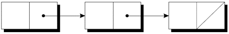
链表中的最后一个结点包含一个空指针.
##### 链表
链表比数组更灵活: 我们可以轻松地在链表中插入和删除结点, 允许链表按需扩大和缩小.
另一方面, 我们失去了数组的"随机访问"能力:
可以在相同的时间内访问数组的任何元素.
如果结点靠近链表的开头, 则访问链表中的结点很快, 如果靠近链表的尾端, 则访问速度较慢.
要建立一个链表, 首先需要一个代表单个结点的结构.
结点结构将包含数据(在本例中为整数)以及指向链表中下一个结点的指针:
struct node {
int value; /* data stored in the node */
struct node *next; /* pointer to the next node */
};node必须是结构标记, 而不是typedef名称, 否则将无法声明next的类型.
接下来, 需要一个始终指向链表中第一个结点的变量:
struct node *first = NULL;
将first设置为NULL表示链表最初为空.
构建链表时, 需要逐个创建结点, 并添加到链表中.
创建结点的步骤:
为结点分配内存.
在结点中存储数据.
将结点插入到链表中.
现在集中介绍前两个步骤.
创建结点时, 需要一个临时指向该结点的变量:
struct node *new_node;
用malloc为新结点分配内存, 将返回值保存在new_node中:
new_node = malloc(sizeof(struct node));
new_node现在指向一个刚好足以容纳结点结构体的内存块:
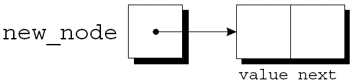
接下来, 将数据存储在新结点的value成员中: (*new_node).value = 10;
赋值后:
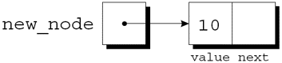
*new_node周围的括号是强制要求的, 因为.运算符优先于*运算符.
->运算符 为了便于使用指针访问结构体的成员, C提供了名为右箭头选择(->)的运算符.
使用->运算符:
new_node->value = 10;
来代替
(*new_node).value = 10;
->运算符 ->运算符产生一个左值, 可以在任何允许普通变量的地方使用它.
scanf调用中的示例:
scanf("%d", &new_node->value);
&运算符仍然是必需的, 即使new_node是一个指针.
链表的优点之一是可以在链表中的任何位置添加结点.
但是, 链表的开头是最容易插入结点的地方.
假设new_node指向要插入的结点, first指向链表中的第一个结点.
将结点插入链表需要两个语句.
第一步是修改新结点的成员next, 使其指向之前在链表开头的结点:
new_node->next = first;
第二步是使first指向新结点:
first = new_node;
即使链表为空, 这些语句也有效.
让我们跟踪将两个结点插入一个空链表的过程.
首先插入一个包含数字10的结点, 然后插入一个包含20的结点.
first = NULL;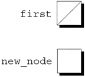
new_node = malloc(sizeof(struct node));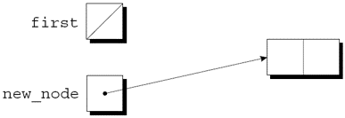
new_node->value = 10;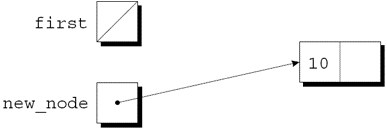
new_node->next = first;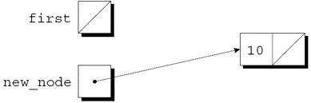
first = new_node;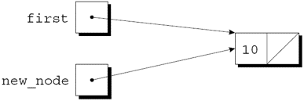
new_node = malloc(sizeof(struct node));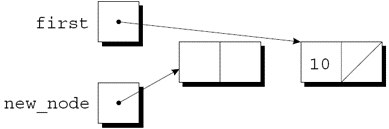
new_node->value = 20;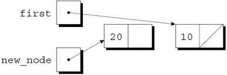
new_node->next = first;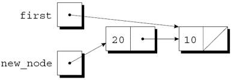
first = new_node;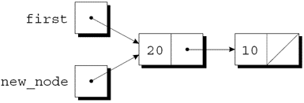
人们站在一个等待被处决的圈子里。 计数从圆圈中的指定点开始，并沿指定方向围绕圆圈进行。 在跳过指定数量的人之后，处刑下一个人。 对剩下的人重复该过程，从下一个人开始，朝同一方向跳过相同数量的人，直到只剩下一个人，并被释放。
问题即，给定人数、起点、方向和要跳过的数字，选择初始圆圈中的位置以避免被处决。
总共: 41, 3
将包含n的结点插入到链表中的函数, 该链表由list指向:
struct node *add_to_list(struct node *list, int n)
{
struct node *new_node;
new_node = malloc(sizeof(struct node));
if (new_node == NULL) {
printf("Error: malloc failed in add_to_list\n");
exit(EXIT_FAILURE);
}
new_node->value = n;
new_node->next = list;
return new_node;
}请注意, add_to_list返回一个指向新创建结点的指针(现在位于链表的开头).
当我们调用add_to_list时, 我们需要将其返回值存储到first中:
first = add_to_list(first, 10);
first = add_to_list(first, 20);用add_to_list直接更新first, 而不是返回first的新值, 这样做是个技巧.
使用add_to_list创建包含用户输入数字的链表的函数:
struct node *read_numbers(void)
{
struct node *first = NULL;
int n;
printf("Enter a series of integers (0 to terminate): ");
for (;;) {
scanf("%d", &n);
if (n == 0)
return first;
first = add_to_list(first, n);
}
}这些数字将在链表中以相反的顺序排列.
虽然while循环也可以搜索链表, 但for语句通常是首选.
访问链表中结点的循环, 使用指针变量p来跟踪"当前"结点:
for (p = first; p != NULL; p = p->next)
…这种形式的循环可用于在链表中搜索整数n的函数.
如果找到n, 该函数将返回一个指向包含n的结点的指针; 否则, 它将返回一个空指针.
该函数的初始版本:
struct node *search_list(struct node *list, int n)
{
struct node *p;
for (p = list; p != NULL; p = p->next)
if (p->value == n)
return p;
return NULL;
}--
还有很多其他的方法来编写search_list.
一种替代方法是消除变量p, 用list本身来跟踪当前结点:
struct node *search_list(struct node *list, int n)
{
for (; list != NULL; list = list->next)
if (list->value == n)
return list;
return NULL;
}注意：list是原始链表指针的副本, 在函数中更改没有副作用.
另一种选择:
struct node *search_list(struct node *list, int n)
{
for (; list != NULL && list->value != n;
list = list->next)
;
return list;
}因为到达链表末尾处时list为NULL, 所以即使找不到n, 返回list也是正确的.
如果使用while语句, 这个版本的search_list可能会更清晰一些:
struct node *search_list(struct node *list, int n)
{
while (list != NULL && list->value != n)
list = list->next;
return list;
}将数据存储在链表中的一大优势是可以轻松删除结点.
删除结点包含3个步骤:
找到要删除的结点.
更改前一个结点, 使其“绕过”已删除的结点.
调用free回收被删除结点占用的空间.
第1步比看起来更难, 因为第2步需要更改前一个结点.
这个问题有多种解决方案.
"追踪指针"技术涉及保持指向前一个结点(prev)的指针以及指向当前结点(cur)的指针.
假设list指向要搜索的链表, n是要删除的整数.
实现步骤1的循环:
for (cur = list, prev = NULL;
cur != NULL && cur->value != n;
prev = cur, cur = cur->next)
;当循环终止时, cur指向要删除的结点, prev指向前一个结点.
假设链表如下并且n为20:
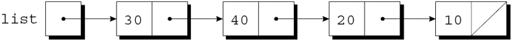
执行完cur = list, prev = NULL后:
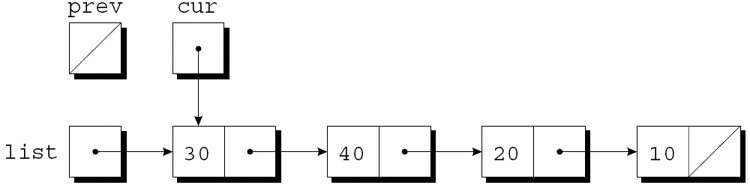
判定表达式cur != NULL && cur->value != n为真, 因为cur指向一个结点且该结点不包含20.
执行完prev = cur, cur = cur->next后:
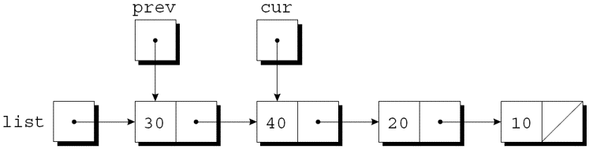
判定表达式cur != NULL && cur->value != n再次为真, 所以再次执行prev = cur, cur = cur->next:
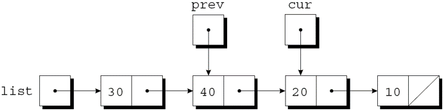
由于cur现在指向包含20的结点, 条件cur->value != n为假, 循环终止.
接下来, 执行第 2 步所需的绕过.
语句 prev->next = cur->next;
使前一个结点中的指针指向当前结点后面的结点:
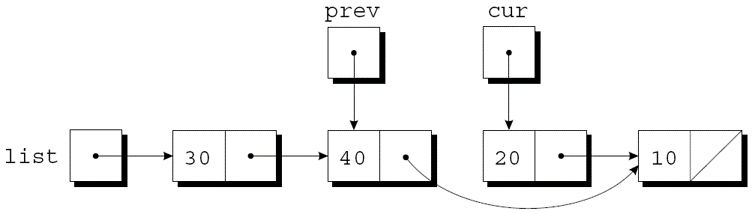
第 3 步, 释放当前结点占用的内存: free(cur);
delete_from_list函数使用刚刚概述的策略.
当给定链表和整数n时, 该函数删除包含n的第一个结点.
如果没有结点包含n, delete_from_list什么也不做.
无论哪种情况, 该函数都会返回一个指向链表的指针.
删除链表中的首结点是一种特殊情况, 需要不同的绕过步骤.
struct node *delete_from_list(struct node *list, int n)
{
struct node *cur, *prev;
for (cur = list, prev = NULL;
cur != NULL && cur->value != n;
prev = cur, cur = cur->next)
;
if (cur == NULL)
return list; /* n was not found */
if (prev == NULL)
list = list->next; /* n is in the first node */
else
prev->next = cur->next; /* n is in some other node */
free(cur);
return list;
}当链表的结点是有序的——按结点中的数据排序——我们称该链表是有序链表.
向有序链表中插入结点更加困难, 因为结点并不总是放在链表的开头.
但是搜索会更快: 在到达期望结点应该出现的位置后, 就可以停止查找.
*inventory2.c*程序是对第 16 章零件数据库程序的修改, 这次数据库存储在一个链表中.
使用链表的优点:
无需限制数据库的大小.
数据库可以很容易地按零件编号排序.
在原始程序中, 数据库没有排序.
part结构将包含一个额外的成员(指向下一个结点的指针):
struct part {
int number;
char name[NAME_LEN+1];
int on_hand;
struct part *next;
};inventory将指向链表首结点:
struct part *inventory = NULL;
新程序中的大多数函数与原始程序中的版本非常相似.
find_part和insert会更复杂, 因为将按零件编号对链表inventory中的结点进行排序.
在原始程序中, find_part返回数组inventory的索引.
在新程序中, find_part将返回一个指向包含所需零件编号的结点的指针.
如果没有找到该零件编号, find_part将返回一个空指针.
由于链表inventory已排序, 因此find_part可以在找到包含大于或等于所需零件编号的结点时停止.
find_part的搜索循环:
for (p = inventory;
p != NULL && number > p->number;
p = p->next)
;当循环终止时, 需要测试是否找到了该零件:
if (p != NULL && number == p->number)
return p;原始版本的insert将新零件存储在下一个可用数组元素中.
新版本必须确定新零件在链表中的位置并将其插入到那里.
它还要检查零件编号是否已存在于链表中.
完成这两项任务的循环:
for (cur = inventory, prev = NULL;
cur != NULL && new_node->number > cur->number;
prev = cur, cur = cur->next)
;一旦循环终止, insert将检查cur是否不为NULL, 以及new_node->number是否等于cur->number.
如果两者都为真, 则零件编号已在链表中.
否则, insert将在prev和cur指向的结点之间插入一个新结点.
即使新零件的编号大于链表中的任何编号, 此策略也有效.
和原程序一样, 这个版本需要第 16 章的read_line函数.
/* Maintains a parts database (linked list version) */
#include <stdio.h>
#include <stdlib.h>
#include "readline.h"
#define NAME_LEN 25
struct part {
int number;
char name[NAME_LEN+1];
int on_hand;
struct part *next;
};
struct part *inventory = NULL; /* points to first part */
struct part *find_part(int number);
void insert(void);
void search(void);
void update(void);
void print(void);
/**********************************************************
* main: Prompts the user to enter an operation code, *
* then calls a function to perform the requested *
* action. Repeats until the user enters the *
* command 'q'. Prints an error message if the user *
* enters an illegal code. *
**********************************************************/
int main(void)
{
char code;
for (;;) {
printf("Enter operation code: ");
scanf(" %c", &code);
while (getchar() != '\n') /* skips to end of line */
;
switch (code) {
case 'i': insert();
break;
case 's': search();
break;
case 'u': update();
break;
case 'p': print();
break;
case 'q': return 0;
default: printf("Illegal code\n");
}
printf("\n");
}
}
/**********************************************************
* find_part: Looks up a part number in the inventory *
* list. Returns a pointer to the node *
* containing the part number; if the part *
* number is not found, returns NULL. *
**********************************************************/
struct part *find_part(int number)
{
struct part *p;
for (p = inventory;
p != NULL && number > p->number;
p = p->next)
;
if (p != NULL && number == p->number)
return p;
return NULL;
}
/**********************************************************
* insert: Prompts the user for information about a new *
* part and then inserts the part into the *
* inventory list; the list remains sorted by *
* part number. Prints an error message and *
* returns prematurely if the part already exists *
* or space could not be allocated for the part. *
**********************************************************/
void insert(void)
{
struct part *cur, *prev, *new_node;
new_node = malloc(sizeof(struct part));
if (new_node == NULL) {
printf("Database is full; can't add more parts.\n");
return;
}
printf("Enter part number: ");
scanf("%d", &new_node->number);
for (cur = inventory, prev = NULL;
cur != NULL && new_node->number > cur->number;
prev = cur, cur = cur->next)
;
if (cur != NULL && new_node->number == cur->number) {
printf("Part already exists.\n");
free(new_node);
return;
}
printf("Enter part name: ");
read_line(new_node->name, NAME_LEN);
printf("Enter quantity on hand: ");
scanf("%d", &new_node->on_hand);
new_node->next = cur;
if (prev == NULL)
inventory = new_node;
else
prev->next = new_node;
}
/**********************************************************
* search: Prompts the user to enter a part number, then *
* looks up the part in the database. If the part *
* exists, prints the name and quantity on hand; *
* if not, prints an error message. *
**********************************************************/
void search(void)
{
int number;
struct part *p;
printf("Enter part number: ");
scanf("%d", &number);
p = find_part(number);
if (p != NULL) {
printf("Part name: %s\n", p->name);
printf("Quantity on hand: %d\n", p->on_hand);
} else
printf("Part not found.\n");
}
/**********************************************************
* update: Prompts the user to enter a part number. *
* Prints an error message if the part doesn't *
* exist; otherwise, prompts the user to enter *
* change in quantity on hand and updates the *
* database. *
**********************************************************/
void update(void)
{
int number, change;
struct part *p;
printf("Enter part number: ");
scanf("%d", &number);
p = find_part(number);
if (p != NULL) {
printf("Enter change in quantity on hand: ");
scanf("%d", &change);
p->on_hand += change;
} else
printf("Part not found.\n");
}
/**********************************************************
* print: Prints a listing of all parts in the database, *
* showing the part number, part name, and *
* quantity on hand. Part numbers will appear in *
* ascending order. *
**********************************************************/
void print(void)
{
struct part *p;
printf("Part Number Part Name "
"Quantity on Hand\n");
for (p = inventory; p != NULL; p = p->next)
printf("%7d %-25s%11d\n", p->number, p->name, p->on_hand);
}第 13 章介绍了指向指针的指针的概念.
"指向指针的指针"的概念也经常出现在链式数据结构中.
特别是, 当函数的实际参数是指针变量时, 可能会希望函数能够修改变量.
这样做需要使用指向指针的指针.
##### 指向指针的指针
向add_to_list函数传递一个指向原始链表首结点的指针; 它返回一个指向新链表首结点的指针:
struct node *add_to_list(struct node *list, int n)
{
struct node *new_node;
new_node = malloc(sizeof(struct node));
if (new_node == NULL) {
printf("Error: malloc failed in add_to_list\n");
exit(EXIT_FAILURE);
}
new_node->value = n;
new_node->next = list;
return new_node;
}如果要修改add_to_list, 把new_node赋值给list, 而不是返回new_node, 这是不起作用的.
调用函数: add_to_list(first, 10);
在调用点, first被复制到list中.
函数可以改变list的值, 使其指向新结点, 但first不受影响.
让函数add_to_list修改first是可能的, 需要向add_to_list传递一个指向first的指针:
void add_to_list(struct node **list, int n)
{
struct node *new_node;
new_node = malloc(sizeof(struct node));
if (new_node == NULL) {
printf("Error: malloc failed in add_to_list\n");
exit(EXIT_FAILURE);
}
new_node->value = n;
new_node->next = *list;
*list = new_node;
}当调用新版本的add_to_list时, 第一个参数将是first的地址: add_to_list(&first, 10);
由于给list赋予了first的地址, 可以使用*list作为first的别名.
特别是, 将new_node赋值给*list将修改first.
C 不要求指针只指向数据; 也可以有指向函数的指针.
函数占用内存单元, 因此每个函数都有一个地址.
可以像使用指向数据的指针一样使用函数指针.
将函数指针作为参数传递是相当普遍的.
##### 函数指针作为参数
编写integrate函数求函数f在a点和b点之间的积分, 可以把f作为参数传入, 从而使其尽可能通用.
integrate原型:
double integrate(double (*f)(double), double a, double b);*f两边的括号表示f是指向函数的指针.
另一种原型:
double integrate(double f(double), double a, double b);调用integrate计算sin函数从0到\(\pi\)/2的积分:
result = integrate(sin, 0.0, PI/2);
当函数名后面没有括号时, C 编译器会生成一个指向该函数的指针.
在integrate函数体内, 可以调用f指向的函数:
y = (*f)(x);
允许使用f(x)代替(*f)(x) .
C 库中一些功能强大的函数要求把函数指针作为参数.
其中之一是qsort, 它的原型在
qsort是一个通用的排序函数, 能够对任何数组进行排序.
必须告诉qsort如何确定两个数组元素中的哪个"更小".
这是通过向qsort传递一个指向比较函数的指针来完成的.
当给定两个指向数组元素的指针p和q时, 比较函数必须返回一个整数, 即:
如果*p “小于” *q, 返回负数;
如果*p “等于” *q, 返回零;
如果*p “大于” *q, 返回正数.
qsort的原型:
void qsort(void *base, size_t nmemb, size_t size,
int (*compar)(const void *, const void *));base必须指向数组中的第一个元素(或要排序的部分中的第一个元素).
nmemb是要排序的元素数.
size是每个数组元素的大小, 以字节为单位.
compar是指向比较函数的指针.
调用qsort时, 它将对数组按升序排序, 当需要比较数组元素时调用比较函数.
调用qsort对inventory数组进行排序: qsort(inventory, num_parts, sizeof(struct part), compare_parts);
compare_parts是一个比较两个part结构的函数.
编写compare_parts函数很棘手.
qsort要求其参数的类型为void *, 但我们不能通过void *型的指针访问part结构的成员.
为了解决这个问题, compare_parts会将其参数p和q赋值给struct part *类型的变量.
compare_parts的一个版本, 按零件编号升序排序inventory数组:
int compare_parts(const void *p, const void *q)
{
const struct part *p1 = p;
const struct part *q1 = q;
if (p1->number < q1->number)
return -1;
else if (p1->number == q1->number)
return 0;
else
return 1;
}大多数 C 程序员会更简洁地编写函数:
int compare_parts(const void *p, const void *q)
{
if (((struct part *) p)->number < ((struct part *) q)->number)
return -1;
else if (((struct part *) p)->number == ((struct part *) q)->number)
return 0;
else
return 1;
}移除if语句可以使compare_parts更短:
int compare_parts(const void *p, const void *q)
{
return ((struct part *) p)->number -
((struct part *) q)->number;
}compare_parts的一个版本, 按零件名称而不是零件编号对inventory数组进行排序:
int compare_parts(const void *p, const void *q)
{
return strcmp(((struct part *) p)->name, ((struct part *) q)->name);
}尽管函数指针经常用作参数, 但这并不是它们的全部优点.
C 将指向函数的指针视为指向数据的指针.
它们可以存储在变量中, 也可以用作数组的元素, 结构或联合的成员.
函数甚至可以返回函数指针.
可以存储指向函数的指针的变量, pf指向具有int型参数且返回void型值的函数:
void (*pf)(int);如果f是这样一个函数, 可以通过以下方式使pf指向f: pf = f; 可以通过以下方式调用f: (*pf)(i);或者pf(i);
元素是函数指针的数组:
void (*file_cmd[])(void) = {new_cmd,
open_cmd,
close_cmd,
close_all_cmd,
save_cmd,
save_as_cmd,
save_all_cmd,
print_cmd,
exit_cmd
};对数组file_cmd取下标调用对应位置的函数:
(*file_cmd[n])(); /* or file_cmd[n](); */
switch语句可以获得类似的效果, 但函数指针数组提供了更大的灵活性.
tabulate.c程序打印显示cos、sin和tan函数值的表格.
程序围绕名为tabulate的函数构建, 当传递函数指针f时, 它会打印出函数f的值.
tabulate使用了ceil函数.
当给定一个double类型的参数x时, ceil返回大于或等于x的最小整数.
tabulate.c的会话:
Enter initial value: 0
Enter final value: .5
Enter increment: .1
x cos(x)
------- -------
0.00000 1.00000
0.10000 0.99500
0.20000 0.98007
0.30000 0.95534
0.40000 0.92106
0.50000 0.87758
x sin(x)
------- -------
0.00000 0.00000
0.10000 0.09983
0.20000 0.19867
0.30000 0.29552
0.40000 0.38942
0.50000 0.47943
x tan(x)
------- -------
0.00000 0.00000
0.10000 0.10033
0.20000 0.20271
0.30000 0.30934
0.40000 0.42279
0.50000 0.54630/* Tabulates values of trigonometric functions */
#include <math.h>
#include <stdio.h>
void tabulate(double (*f)(double), double first,
double last, double incr);
int main(void)
{
double final, increment, initial;
printf("Enter initial value: ");
scanf("%lf", &initial);
printf("Enter final value: ");
scanf("%lf", &final);
printf("Enter increment: ");
scanf("%lf", &increment);
printf("\n x cos(x)"
"\n ------- -------\n");
tabulate(cos, initial, final, increment);
printf("\n x sin(x)"
"\n ------- -------\n");
tabulate(sin, initial, final, increment);
printf("\n x tan(x)"
"\n ------- -------\n");
tabulate(tan, initial, final, increment);
return 0;
}
void tabulate(double (*f)(double), double first,
double last, double incr)
{
double x;
int i, num_intervals;
num_intervals = ceil((last - first) / incr);
for (i = 0; i <= num_intervals; i++) {
x = first + i * incr;
printf("%10.5f %10.5f\n", x, (*f)(x));
}
}